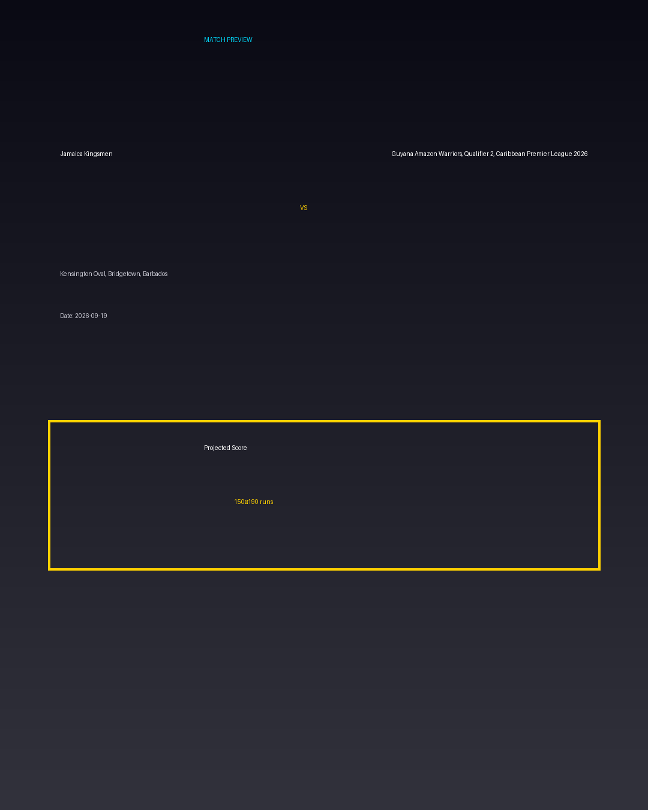

Jamaica Kingsmen vs Guyana Amazon Warriors, Qualifier 2, Caribbean Premier League 2026
Date: 2026-09-19
Venue: Kensington Oval, Bridgetown, Barbados


Form Guide
Jamaica Kingsmen: 🟩 🟥 🟩 🟩 🟥
Guyana Amazon Warriors, Qualifier 2, Caribbean Premier League 2026: 🟥 🟩 🟥 🟥 🟩
Pitch Report
Balanced wicket with moderate scoring conditions.
Projected Score
150–190 runs
Key Players
- Jamaica Kingsmen Key Batter — Batsman
- Jamaica Kingsmen Strike Bowler — Bowler
- Guyana Amazon Warriors, Qualifier 2, Caribbean Premier League 2026 Key Batter — Batsman
- Guyana Amazon Warriors, Qualifier 2, Caribbean Premier League 2026 Strike Bowler — Bowler
Advanced Win Probability
Jamaica Kingsmen: 64.3%
Guyana Amazon Warriors, Qualifier 2, Caribbean Premier League 2026: 35.7%
AI Match Prediction
Based on venue conditions, a projected scoring range of 150–190 runs, recent form (with Jamaica Kingsmen appearing slightly stronger), and the pitch profile ('Balanced wicket with moderate scoring conditions.'), this matchup appears to present Jamaica Kingsmen entering as clear favorites. Early momentum and top-order execution will likely determine the winner.
